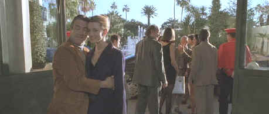

MGM-UA/1998/121m/ANA 1.85, PS 1.33
That said, let’s cut to the chase. The car chases, that it is; they are terrific, gut-wrenching, in you face exercises of dynamic filmmaking. They occur with such furious energy that it is easy to suspend disbelief. So what if the streets would be a mass of immovable bodies when the cars are recklessly maneuvering the curves.
 |
The background's important in this photo©MGM-UA |
Ronin hangs its plot
clothing on an empty frame. A group of disaffected former government agents are hired by
an Irish revolutionary arm to hijack a metal box that is about to be sold to the highest
bidder. What's in the metal box is irrelevant. It's the chase that counts, the plotting
and the surveillance, the overall ambiance. Who can you trust. The twists and turns of the
plot are more to difficult to navigate than the winding roads of Nice and its environs
that highlight one of the grand car chases. It's best not to think about what's going on
but enjoy the scenery, the gun play, and the obvious fun the filmmaker's are having. A
little more care in making the plot make sense may have turned Ronin into a classic
thriller. The hunt for the metal box forms up in Paris, rides to Nice, makes some
unexpected stops at other colorful French locales, and winds up with furious plot
shenanigans for a Paris finale.
John Frankenheimer knows his apples and car chases too. The
veteran director knows where to put the camera to ignite the excitement too. Frankenheimer
takes all the improbabilities, dubious character construction, and repetitions, throws
into his deep veteran director's bag, shakes it up furiously and makes Ronin a very
entertaining movie despite its obvious weaknesses. The stunts are stages with nothing
short breathlessness.
Robert De Niro is cast against type as a gladiator in the
espionage arena and turns it into one of his more satisfying performances in recent years.
De Niro puts his stamp on world-weary, shows plenty of pizzazz in handling various weapons
and trades blows with the best of them amidst Ronin's excitement. Jean Reno playing
a French member of the hijack team develops nice chemistry with De Niro. Natascha McElhone
is given some very difficult characterization to make believable. Her relationship to De
Niro is a big stretch. But she's beautiful and agile and the aroma of roses to Ronin.
Ronin's explosiveness is captured with crackerjack
precision on this splendid DVD. All that motion must present a challenge to any system,
but DVD does justice to the action. A sharp and detailed DVD in every situation, it is
especially film-like in video execution. Colors are very natural and approximate the
theatrical presentation of this film very well. There is no undue edge enhancement. In the
darker scenes shadow detail displays with excellent range. The soundtrack is extremely
dynamic handling quiet and explosive passages with equal aplomb. The car chases are a
marvelous melange of surround sound detail in this Dolby Digital 5:1 mix. Oh, and all
those bullets ricochet from corner to corner of the home theater environment. Ronin
includes an intelligent and technically astute running audio commentary from John
Frankenheimer. You'll learn lots about the fabulous stunt work and about the decisions on
how important plot details were to the Ronin vision. There's also an alternate
ending to ponder that I thought made very little difference to the film.